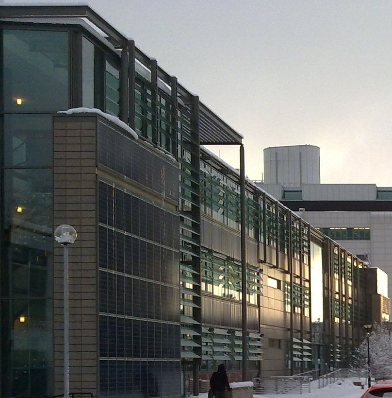
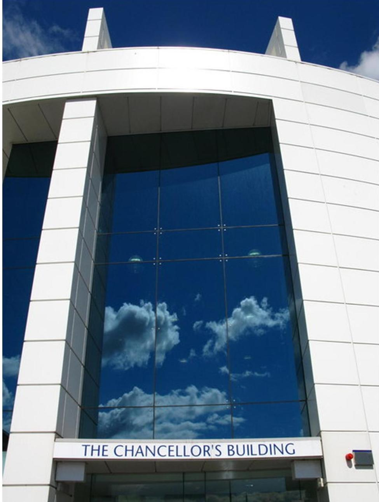

Welcome to the homepage of Orthopaedic Engineering a collaboration within the Colleges of Science and Engineering and Medicine and Veterinary Medicine at the University of Edinburgh. The group carries out research in orthopaedic and biomedical engineering.
|  |  | School of Engineering | School of medicine |
Particular research interests of the group are (click on the links to learn more):
|
|